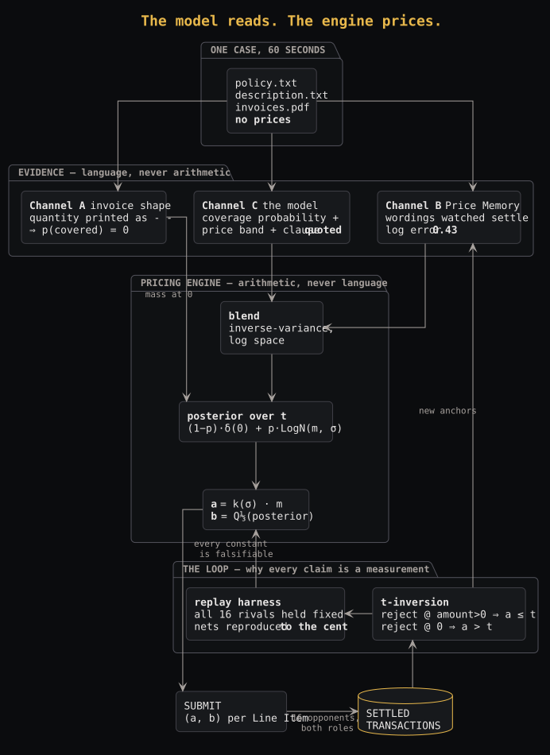
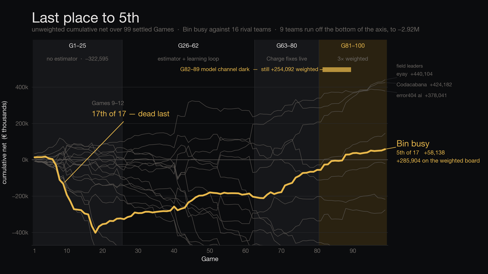
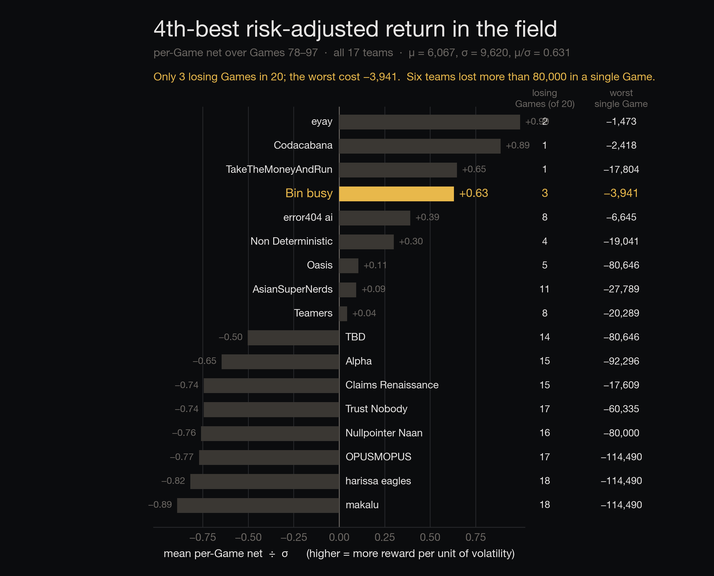

WireClaim
We stopped guessing what a claim is worth,
and started measuring what it turned out to be worth.
| a ≤ t — the Charge is fair | a > t — an Overcharge | |
|---|---|---|
| rejected | reviewer pays 1.5a · issuer is still paid a | nothing happens |
| accepted | reviewer pays a · issuer gets a | reviewer pays min(a,c) |
A fair Charge is owed by all 16 opponents.
An Overcharge is paid by the 3 who accept.
| Game 62, item 1 t ∈ [8505, 10350) | Charge | paid by | income |
|---|---|---|---|
| error404 ai | 8,504.71 | 16/16 | 136,075 |
| us | 10,349.89 | 3/16 | 31,050 |
They did not out-read the policy. They charged 22 % lower and landed on the right side of a cliff. That one item was 87 % of their whole Game.
The published Transactions invert.
So we can replay any hypothetical submission against the real Field. Every number in this pitch is a measurement, not an argument. (We asked: inference from published results is permitted.)
The model reads. The engine prices.

No model output is ever a price. A prompt that emits a number cannot be swept, folded or replayed — one that emits evidence can.
The ⅓ is derived, not tuned: rejecting a fair claim costs 1.5a, a fraudulent one costs nothing.
Half the tournament ran while everyone was asleep. Break-even uptime is 71 % — showing up is 2.5× being right.
a = 0, b = 0 does not score zero. b = 0 wrongfully rejects every fair claim, so a dark team pays 1.5a to every awake opponent. We watched it happen: makalu paid us 179,993 and collected 0.00 from anyone.

Every rival is a grey line. The deficit is Games 1–25, before the estimator was working — the slope after it is the method, not the market. Last 20 Games: 2nd in the field by rate.

Seven teams carry a single Game worse than −80,000. Our deepest hole in thirty Games is −9,720.
That is what the ⅓ Limit, the blind floor and the supervisor buy. Not a bigger number — a narrower distribution, which in an insurance book is the number that matters.
Scaling as √n that is ±6,275 for one Game — so no single Game ever justified a change, however vivid at 4 a.m. Every change had to be positive on all four folds: odd, even, early, late.
| change | mechanism | measured |
|---|---|---|
| CHARGE_TRUST _MEMORY | raise the Charge only where a wording has been watched settle | +80,613 4/4 folds |
| the control | the identical change on the model channel | −95,061 0/4 folds |
The control is what makes it a channel effect rather than "charge more". Memory's measured log error is 0.43; the model's realised error over the same Games is 1.66 – 2.20.
12 of our 20 hypotheses were measured and rejected.
One of them twenty minutes after it shipped.
A coverage recalibration passed a genuine calibration table and all four folds, with no negative cell in any window. It shipped.
Then we checked the mechanism: the model's coverage output is bimodal. An item must sit in (0.560, 0.667] for the correction to change anything.
| stated coverage | items | share |
|---|---|---|
| 0.00 – 0.05 | 157 | 27.4 % |
| 0.56 – 0.67 | 4 | 0.7 % |
| 0.80 – 1.01 | 333 | 58.1 % |
4 Line Items in 573. The +5,057 was a Limit nudge wearing a calibration costume. A constant can be right about its data and wrong about its mechanism — and folds catch a result driven by a few Games, never one driven by a few items.
The model reads.
The engine prices.
The record decides.
every counterfactual is a measurement
26,622 — nothing ships inside it
one twenty minutes after it shipped